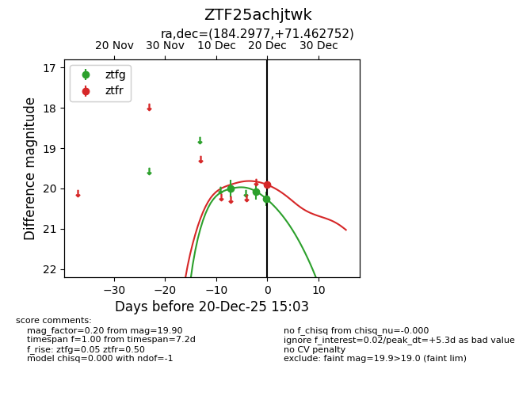
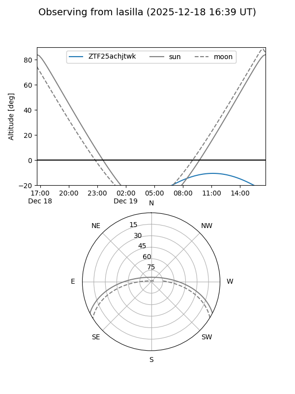
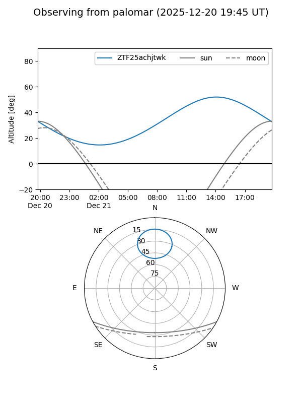

ZTF25achjtwk
Target ZTF25achjtwk at 2026-01-09 12:49
Aliases and brokers:
FINK: link
Lasair: link
ALeRCE: link
alt names
ZTF25achjtwk (ztf,fink_ztf)
Coordinates:
equatorial (ra, dec) = 184.2977,+71.46275
equatorial (HMS+DMS) = 12:17:11.44,+71:27:45.91
galactic (l, b) = (126.7976,+45.40757)
Flags:
Photometry:
last ztfg=20.26, ztfr=19.90
3 ztfg, 1 ztfr detections
Lightcurve

Visibility


Additional plots